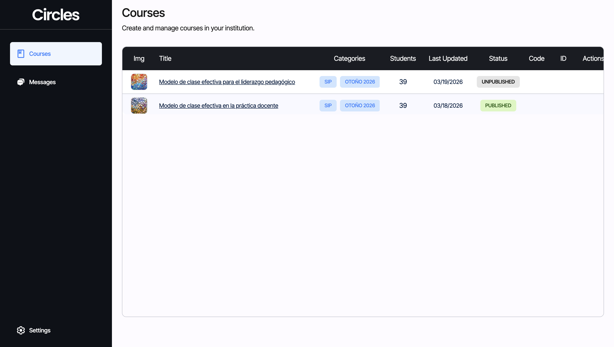
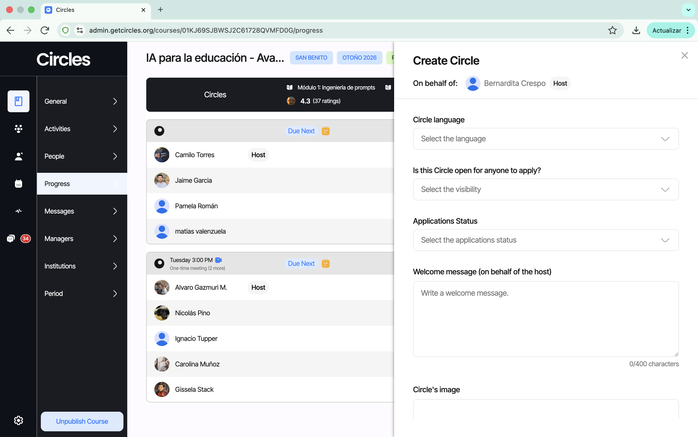

Plataforma Admin Circles¶
Link: https://admin.getcircles.org

Mensajes (Messages)¶
La pestaña de Mensajes muestra todos los chats en los que has participado. Los docentes no pueden iniciar el chat contigo; debes entrar tú e iniciar la conversación. Es la primera opción de comunicación, aunque si el usuario no ve los mensajes, se recomienda usar otro canal (WhatsApp o correo).
Al entrar a un chat, se notifica a todos los participantes. Bajo el nombre del usuario se muestra la última actividad (minutos, horas, días o meses). También se puede ver la foto de perfil, nombre, curso e institución del docente.
Funciones disponibles en el chat: envío de archivos, encuestas, emojis, mensajes de texto y audio. También hay un ícono de llamada, útil para comunicación más detallada o con usuarios mayores.
Cursos (Courses)¶
Al entrar a un curso, se presentan tres pestañas: People, Progress y Messages. Cada una tiene funciones específicas que se detallan a continuación.
People Tab¶
Funciona como una base de datos de los docentes del curso. Muestra: nombre, rol, correo, teléfono, última actividad, estado del certificado, institución y TAG. Incluye un buscador por nombre o correo.
Agregar un usuario: Botón "Add people" > marcar siempre como "Student" > ingresar correo > "Invite".
Remover un usuario: Pasar el mouse sobre la imagen del docente para ver el menú con las opciones: Profile, Message y Remove from course.
Note
Al remover a alguien, siempre hay que consultar y registrar la razón de la baja. Esto ayuda a identificar patrones.
Progress Tab¶
La pestaña más utilizada. Permite monitorear el avance del curso, los participantes y los círculos. Incluye filtros, buscador por nombre, y el botón "Not in a Circle" para ver personas sin grupo.
Módulos: Se visualizan en una barra horizontal. Cada módulo muestra el rating del exit ticket (satisfacción de los docentes) y al hacer clic se despliegan los contenidos: objetivos, actividades, entregable, cierre y contenido adicional.
Círculos: Se muestra el día y hora de la reunión, si es semanal, y quién es el Host (encargado de subir actividades y programar reuniones). Al hacer clic en el ícono se ve: estado, creador, descripción, idioma, reuniones, miembros y asistente a cargo.
Progreso/Actividades: Las entregas pueden ser grupales (las sube el Host) o individuales (cada participante). Si no se envía a tiempo, aparece "Pending". Una actividad enviada se marca con un ícono amarillo.
Messages Tab¶
Pestaña de mensajes dentro del contexto del curso. Se actualiza automáticamente al unirse a conversaciones desde People o desde la pestaña general de Messages.
Crear un círculo desde Admin¶
En algunos casos, un usuario necesita apoyo externo para formar un círculo — por ejemplo, si no logra integrarse durante el periodo de Match, si su círculo se disolvió, o si se incorpora tarde al curso. En estas situaciones, el equipo de soporte puede crear un círculo directamente desde la plataforma Admin.
Cuándo crear un círculo desde Admin¶
- El usuario no pudo hacer Match por su cuenta y ya se agotó el periodo de formación libre.
- Un círculo perdió miembros y es necesario rearmar uno nuevo.
- Coordinación solicita la creación de un círculo para reubicar usuarios.
Pasos para crear un círculo¶
- Dentro del curso en Admin, ir a la pestaña Progress.
- Seleccionar el botón "Not in a Circle" (arriba a la derecha). Se desplegará la lista de todas las personas que aún no tienen círculo.
Importante
La opción de crear círculo solo está disponible para usuarios que ya ingresaron a la plataforma (estado "New User"). No es posible crear un círculo para usuarios en estado "Prospect" (que aún no han ingresado).
- Posicionar el mouse sobre la foto de perfil del usuario que será anfitrión/a. Aparecerán cuatro opciones.
- Seleccionar la segunda opción: "Make Circle Host". Esto creará un círculo nuevo con esa persona como anfitrión/a.
- Completar los campos del nuevo círculo:
- Circle Language: idioma del círculo.
- Is this circle open for anyone to apply: si el círculo estará abierto a postulaciones.
- Application status: estado de las postulaciones.
- Mensaje de bienvenida: texto que verán los miembros al unirse.
- Imagen del círculo: foto o imagen representativa.
- (Opcional) Agregar miembros de inmediato: se desplegará una lista con todos los integrantes del curso que sean "New Users" para agregarlos directamente al crear el círculo.
- Seleccionar el botón "Create Circle" al final para confirmar la creación.
Note
La creación de círculos desde Admin es una acción de soporte. Siempre debe estar respaldada por una solicitud de Coordinación o por una situación documentada que lo justifique.

Subir entregas manualmente¶
Cuando un círculo o un usuario individual no puede subir una entrega por la vía habitual (problemas técnicos, acceso limitado, etc.), el equipo de soporte puede cargar la entrega de forma manual desde la plataforma Admin.
Cuándo subir una entrega manualmente¶
- El usuario reporta un error técnico que le impide subir la entrega.
- El Host de un círculo no está disponible y el grupo necesita que se registre una entrega grupal.
- Coordinación solicita la carga manual de una entrega como excepción.
Subir entrega por un círculo¶
Subir entrega por un usuario individual¶
Note
Toda entrega subida manualmente debe quedar documentada (quién la subió, por qué motivo y cuándo) para mantener la trazabilidad del proceso.